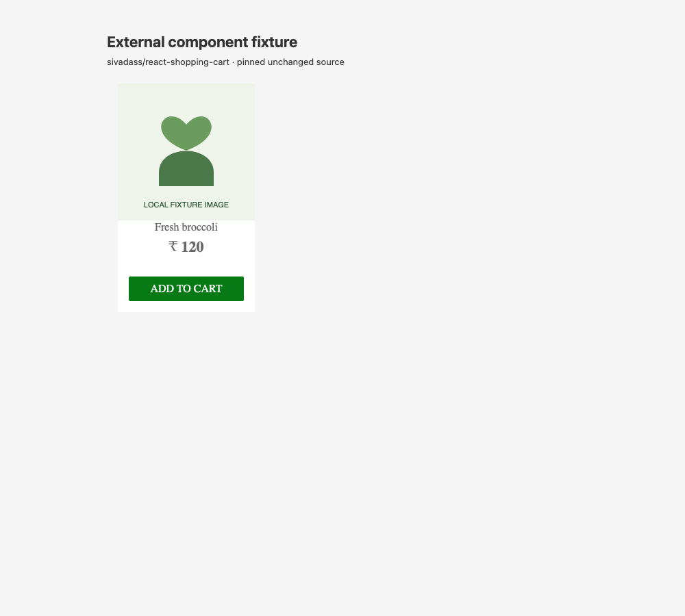
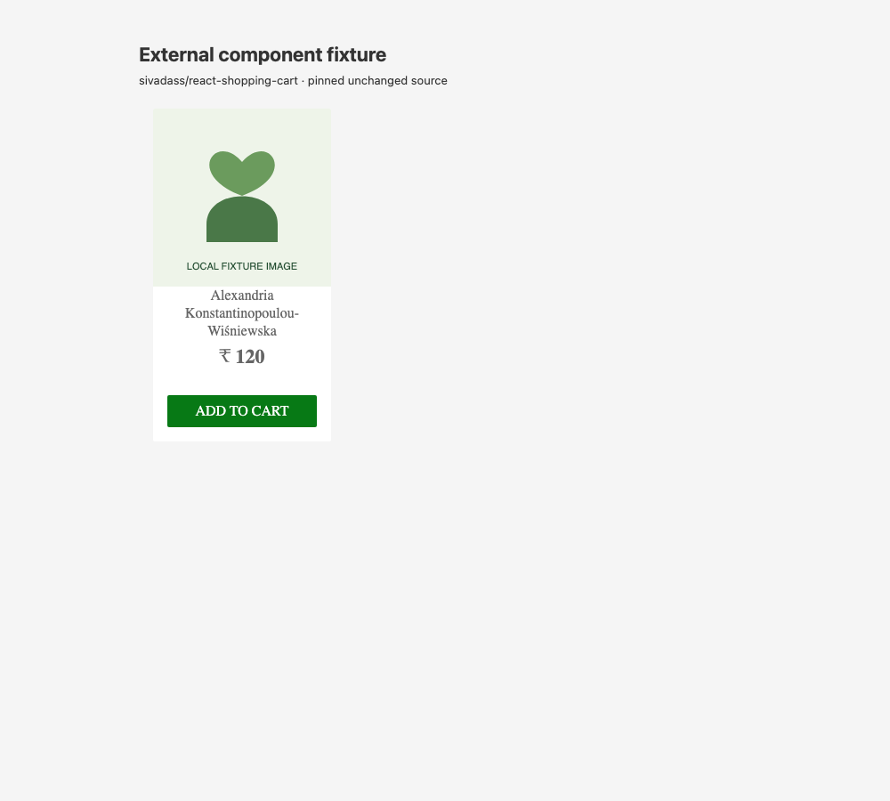

CONFIGURABLE SCENARIO · 2026-11-03T01:43:43.241Z
Shopping app · product card
The original add-to-cart button must remain inside its card and receive pointer events. This does not check text overflow.
No action failure found
14 valid cases checked · 14 passed · 0 failed · 0 inconclusive. This evaluates one declared action rule, not overall component correctness.
Baseline: passed — The action is inside its declared region and receives pointer events at its center.


No failing regression was generated.
All supplied cases
| Case | Result | Evidence |
|---|---|---|
| Long product and record names curated | passed | The action is inside its declared region and receives pointer events at its center. |
| Narrow mobile viewport curated | passed | The action is inside its declared region and receives pointer events at its center. |
| Constrained height with long description curated | passed | The action is inside its declared region and receives pointer events at its center. |
| Unbroken valid content curated | passed | The action is inside its declared region and receives pointer events at its center. |
| Unicode content curated | passed | The action is inside its declared region and receives pointer events at its center. |
| Five table records curated | passed | The action is inside its declared region and receives pointer events at its center. |
| Seeded combination 1 generated | passed | The action is inside its declared region and receives pointer events at its center. |
| Seeded combination 2 generated | passed | The action is inside its declared region and receives pointer events at its center. |
| Seeded combination 3 generated | passed | The action is inside its declared region and receives pointer events at its center. |
| Seeded combination 4 generated | passed | The action is inside its declared region and receives pointer events at its center. |
| Seeded combination 5 generated | passed | The action is inside its declared region and receives pointer events at its center. |
| Seeded combination 6 generated | passed | The action is inside its declared region and receives pointer events at its center. |
| Seeded combination 7 generated | passed | The action is inside its declared region and receives pointer events at its center. |
| Seeded combination 8 generated | passed | The action is inside its declared region and receives pointer events at its center. |
Source and scope
{
"kind": "existing-app-component",
"repository": "https://github.com/sivadass/react-shopping-cart",
"commit": "0e867f1caf6abd7114aab6ae704a2824064e84e0",
"license": "MIT",
"adaptation": "Original component, cart context and styles mounted in a local API fixture harness. Local illustration replaces remote imagery."
}Chromium 156.0.8078.4 · Node v24.21.0 · seed 42 · 3.4s
Source fingerprint: 914626f2df3350cb1099e094de9f8aae743e604c6918a62c284804bb606e3b82. Per-file hashes and exact fixtures are in report.json.